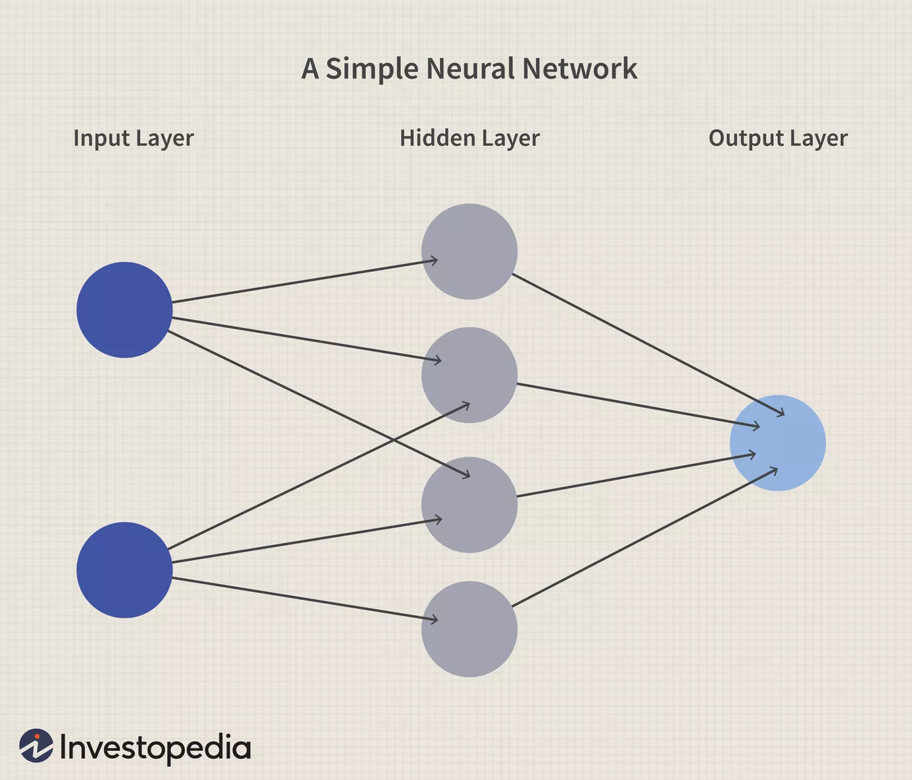

Deep learning is a subset of machine learning in artificial intelligence that has networks capable of learning unsupervised from data that is unstructured or unlabeled. Also known as deep neural learning or deep neural network. Data in deep learning can either be structured or unstructured and it also can be either labeled or unlabeled.
From the above fig., we can understand the major difference between deep learning and machine learning. Although it seems easier to apply deep learning as the algorithm does feature extraction and classification(training), it requires more computing power and control of some hyperparameters. Deep learning algorithms are capable of solving much more complex problems than the ones solved by machine learning algorithms such as (Natural language processing(NLP), Speech recognition, Computer vision, ...).
There are different deep learning algorithms, most of them are Neural Networks such as (Deep Neural Networks, Convolutional Neural Networks, Recurrent Neural Networks, ...). But what is a Neural Network? A neural network is a series of algorithms that endeavors to recognize underlying relationships in a set of data through a process that mimics the way the human brain operates. In this sense, neural networks refer to systems of neurons, either organic or artificial in nature. Neural networks can adapt to changing input; so the network generates the best possible result without needing to redesign the output criteria.
A neural network works similarly to the human brain’s neural network. A “neuron” in a neural network is a mathematical function that collects and classifies information according to a specific architecture. The network bears a strong resemblance to statistical methods such as curve fitting and regression analysis. A neural network contains layers of interconnected nodes. Each node is a perceptron and is similar to a multiple linear regression. The perceptron feeds the signal produced by a multiple linear regression into an activation function that may be nonlinear.
And At the end of the Deep learning section, I would like to mention the course that helped me learn about Deep learning and Neural Networks and I hope to finish the rest of the specialization. The course is on the Coursera website by Andrew Ng about Deep learning (Course link) , (specialization link).